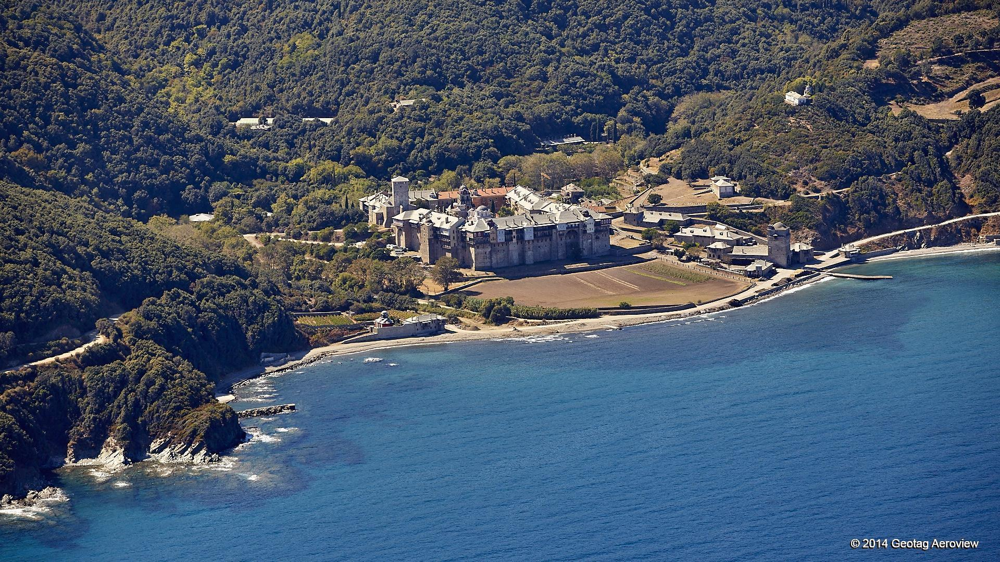
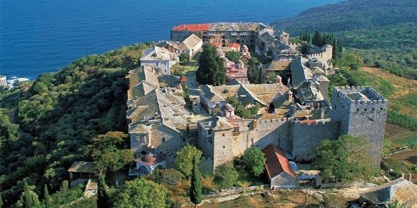
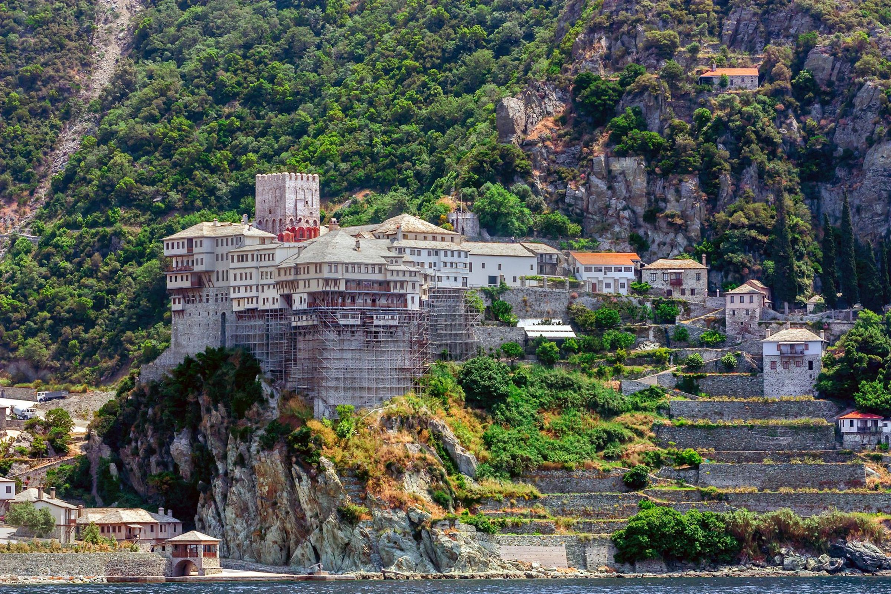

ტურში შედის:
- ტრანსპორტირება თესალონიკიდან ურანოპოლისკენ (მიკროავტობუსით)
- ნავით გადასვლა მთაწმინდაზე
- ღამით მონასტრებში გაჩერება
- კვება მონასტრების მიერ
- დახმარება შესვლის ნებართვებთან დაკავშირებით
მარშრუტი:
- 1 დღე: ჩამოსვლა თესალონიკიში
- 2 დღე: მიკროავტობუსით გამგზავრება ურანოპოლისკენ, შემდეგ ნავით მთაწმინდაზე
- 3 დღე: დიდი ლავრის მონასტრის მონახულება
- 4 დღე: ღამის გათევა ვატოპედის მონასტერში
- 5 დღე: ლაშქრობა და დიონისიოსის მონასტრის მონახულება
- 6 დღე: დაბრუნება თესალონიკში
- 7 დღე: გამგზავრება
ლოკაციის რუკა:
ფოტო გალერეა:



გსურთ შემოუერთდეთ?
დაგვიკავშირდით